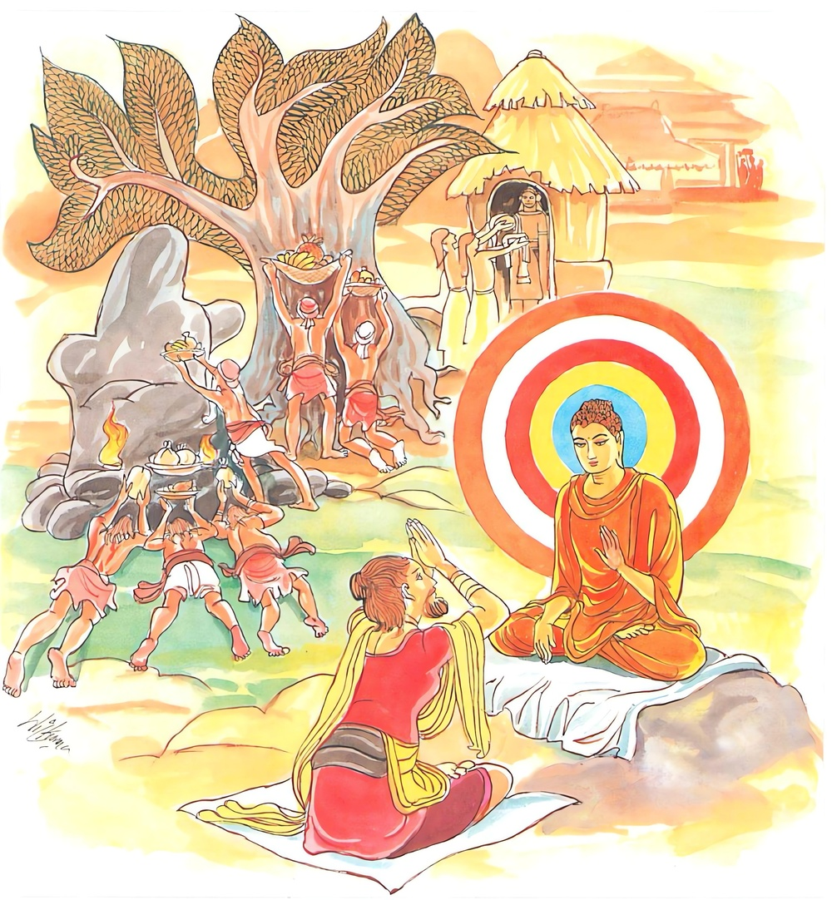
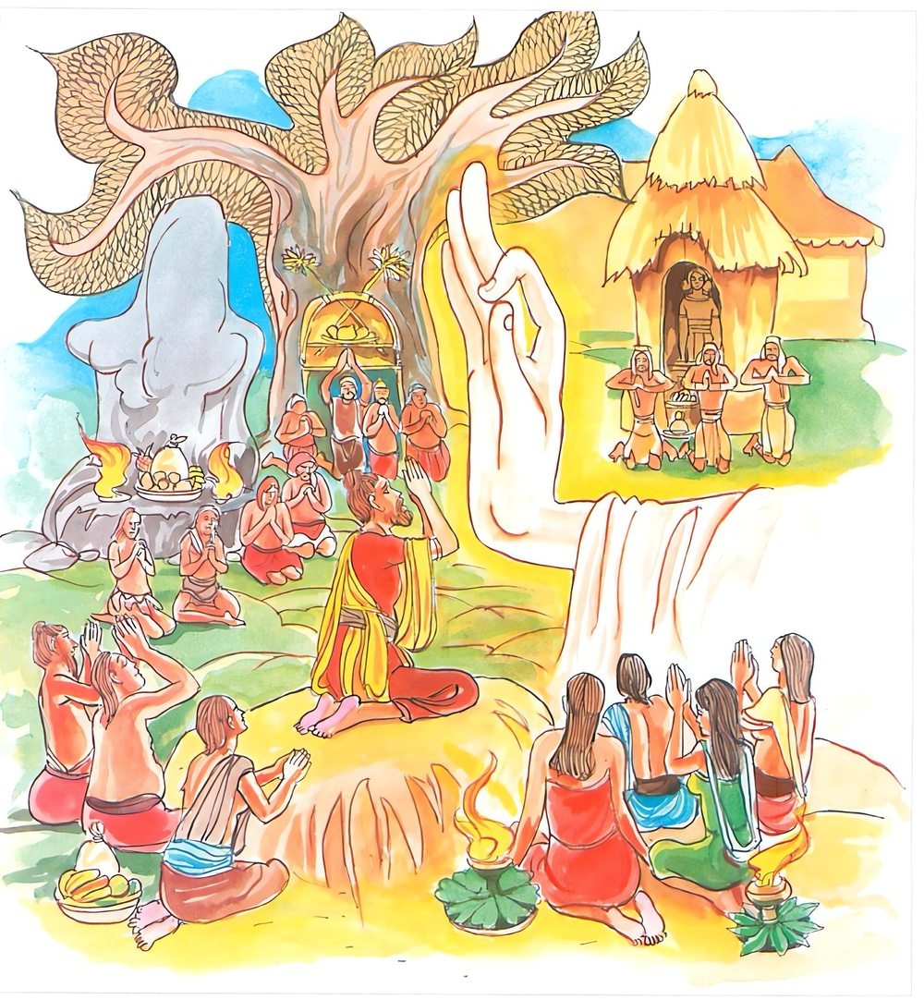
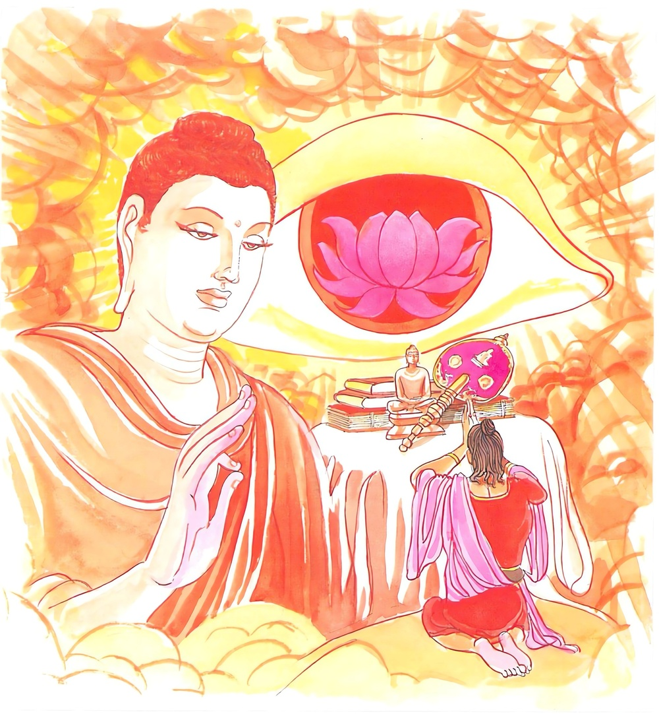
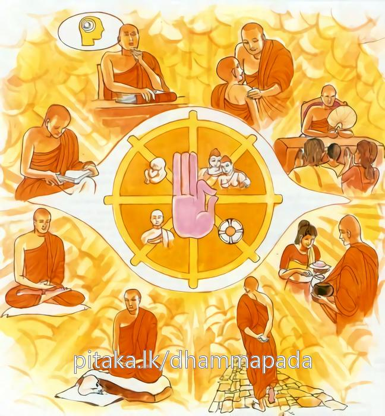
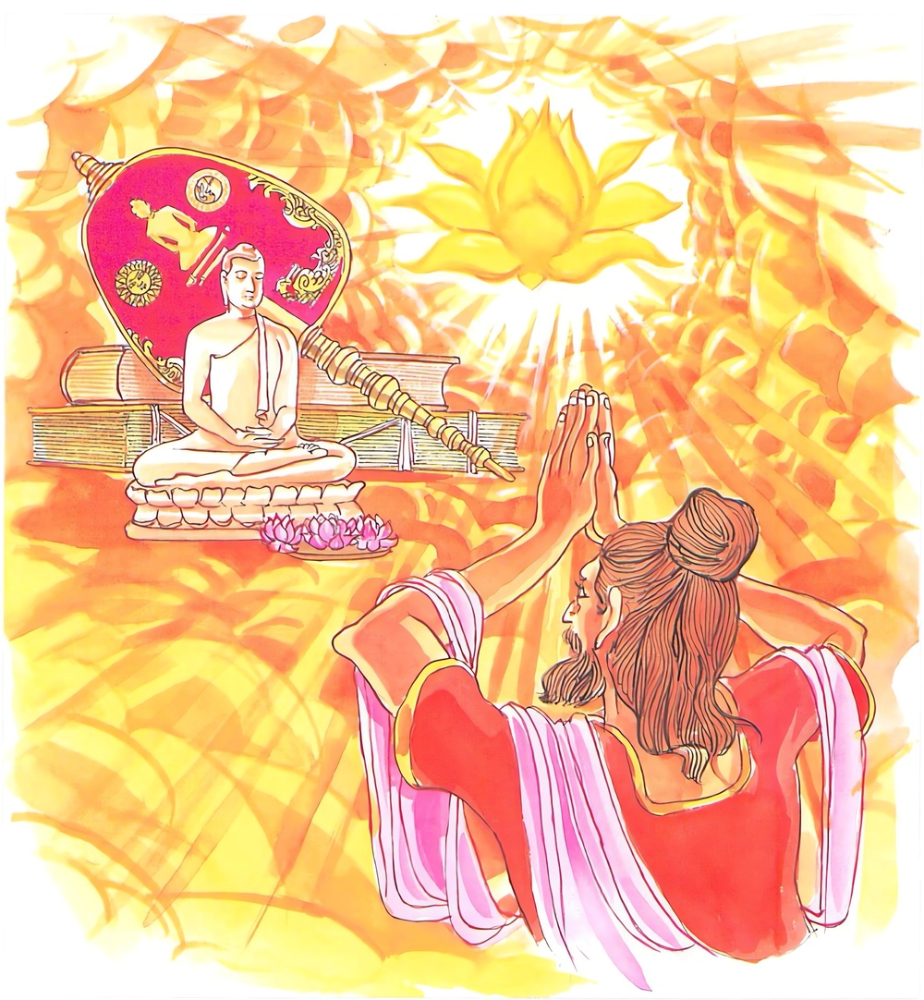

14-6 අග්ගි දත්ත බමුණන්ගේ කථා පුවතයි.
මෙම කතාව සද්ධර්ම සාගරයෙන් ද කියවන්න.
බහූ වෙ සරණං යන්ති පබ්බතානි වනානි ච
ආරාමරුක්ඛචෙත්යානි මනුස්සා භයතජ්ජිතා.
(රාජභයාදි) බියෙන් තැති ගත් බොහෝ මිනිස්සු (ඉසිගිලි වේපුල්ල ආදි) පර්වතයන් ද (සුභගවන මහාවන ගෝසිංගසාලවනාදි) වනයන් ද, (වේළුවන ජිවකම්බවනාදි) ආරාමයන් ද ඒකාන්තයෙන් සරණ යන්නාහ. (සරණ කොට සලකන්නාහ.)

නෙතං ඛො සරණං ඛෙමං නෙතං සරණමුත්තමං
නෙතං සරණමාගම්ම සබ්බදුක්ඛා පමුච්චති.
මෙ කී සියලු ශරණය නිරූපද්රව (නිර්භය) නො වෙයි. මෙ කී ශරණය (මේ නිසා එක ද සතක්හු ජාතිජරාමරණයෙන් නොමිදෙන බැවින්) උතුම් ද නො වෙයි. මෙ කී (පර්වතාදි) ශරණයට පැමිණ සියලු දුකින් (කිසි කලෙකත්) නො මිදෙන්නේ ය.

යො ච බුද්ධඤ්ච ධම්මඤ්ච සඞ්ඝඤ්ච සරණං ගතො
චත්තාරි අරියසච්චානි සම්මප්පඤ්ඤාය පස්සති.
යමෙක් සම්යක්සම්බුද්ධයන් ද සද්ධර්මය ද අෂ්ටාර්ය්යපුද්ගල සඞ්ඝයා ද සරණ ගියේ වේ නම් (සරණ යැ යි දත්තේ වේ නම්), සතර ආර්ය සත්යයන් මනා කොට විදර්ශනාඥාන ඇසින් දක්නේ වේ නම්,

දුක්ඛං දුක්ඛසමුප්පාදං දුක්ඛස්ස ච අතික්කමං
අරියඤ්චට්ඨඞ්ගිකං මග්ගං දුක්ඛූපසමගාමිනං.
(ත්රෛභූමිකවෘත්තසංඛ්යාත) දුඃඛසත්යත් ඒ දුක උපදවන තෘෂණාසංඛ්යාත) සමුදයසත්යයත් ඒ දුඃඛයාගේ ඉක්මීමට කාරණ වු (නිර්වාණසංඛ්යාත) නිරෝධසත්යයත් (දුක්ඛනිරෝධයට පමුණුවන උතුම් වූ අෂ්ටාඞ්ගිකමාර්ග සංඛ්යාත) මාර්ගසත්යයත් මනා කොට නුවණැසින් දක්නේ වේ නම්,

එතං ඛො සරණං ඛෙමං එතං සරණමුත්තමං
එතං සරණමාගම්ම සබ්බදුක්ඛා පමුච්චති.
(රත්නත්රයය ශරණ යෑම ය, චතුරාර්ය්යසත්යයන් මොනොවට දැක්ම ය යන) මේ ශරණය ම නිර්භය ය. මේ ශරණය ම (සියලු දුකින් මිදීමට කරුණු වූ හෙයින්) උතුම් ය. මේ ශරණයට පැමිණ සත්ත්ව තෙම සියලු සසරදුකින් මිදෙන්නේ ය.

"බහු වෙ සරණං යන්ති” යන මේ ධර්ම දේශනය ශාස්තෲන් වහන්සේ දෙව්රම වැඩසිටියදී කොසොල් රජුගේ අග්ගිදත්ත නම් පුරෝහිත බමුණා වැලි ගොඩක් ඇසුරු කරමින් සිටි අවදියේ ඔහු ආරම්භ කොට වදාළසේක.
ඔහු වනාහි මහ කොසොල් රජුගේ පුරෝහිත විය. කොසොල් රජුගේ පිය රජුගේ පුරෝහිතයා වූයේ මේ පුරෝහිතයාගේ පියා ය. (ඒ දෙදෙනාම නැතිවීමෙන් පසුව) එයට ගරු කිරීමක් වශයෙන් කොසොල් රජු මොහු ඒ තනතුරෙහි පිහිටුවීය.
ඔහු තමන් වෙත උවටැනට එන විට දී රජු පෙරගමන් කරයි. ඇඳුරුතුමනි මෙහි වාඩිවෙන්නැයි සමාන අසුනක් තැබවීම කරවයි. ඔහු මෙසේ සිතුවේය.
මේ රජු මට බෙහෙවින් ගෞරව පුදකරයි. එහෙත් නිතරම රජවරුන්ගේ සිත් ගැනීම පහසු නොවේ. සමාන වයස් ඇත්තේ නම් රාජ්ය සැප නියම සැපය වේ. මා වනාහි දැන් මහළුය. ඒ නිසා පැවිදිවීමට යෝග්යය ඔහු රජුගෙන් අනුමැතිය ලබාගෙන නගරයේ බෙර හසුරුවා දින හතකින් සියළු ධනය පරිත්යාග කර බාහිර පැවිද්දන් පැවිදි විය. මේ නිසා දස දහසක් පුරුෂයෝ ඔහු අනුව පැවිදි වුහ. ඔහු ඔවුන් සමග අංග මගධ හා කුරු රට අතර වාසය කරමින් මේ අවවාදය දෙයි. දරුවනි ! යම් කෙනෙකුට කාම විතර්ක ආදිය ඇතිවේද? ඔහු වහා එකිනෙකා වැලි ගොටුවක් බැගින් මේ ස්ථානයේ විසිරවන්න. ඔවුහු යහපතැයි පිළිවදන් දී කාම විතර්ක ආදිය ඇතිවු විට එලෙස වැලිගොඩ ගැසුහ. පසු කාලයේ දී මහා වැලි ගොඩක් ඇතිවීය. ඒ වැලිගොඩ අභිච්ඡත්ත නම් නාගරාජයෙක් අල්ලා ගත්තේය. අංග මගධ හා කුරුරට වාසීහු ද මසක් පසා ඔවුන්ට මහත් සත්කාර දක්වා දන් දෙති. ඉක්බිති ඔවුන්ට අග්ගිදත්ත මේ අවවාදය දුන්නේය. පර්වත සරණ වනසරණ යව් හැසිරෙවු. ආරාම සරණයවු. ගස් සරණ යමු. මෙලෙස සියළු දුක්වලින් මිදෙමු. තම තමන්ගේ අන්තේවාසිකයන්ට ද මේ අවවාද දෙව් බෝසතාණන් වහන්සේද අභිනිෂ්ක්රමණය කොට සම්මා සම්බෝධියට පැමිණ එකල සැවැත් නුවර නිසා දෙව්රම වැඩ වසමින් උදැසන ලොව බලන්නේ අග්ගිදත්ත බ්රාහ්මණයා සමග අතවැසි පිරිස තම ඥාණ ජාලයට පිවිසුනි. මේ සියල්ලෝම රහත් ඵලයට හේතු සම්පත් ඇතැයි දැන සවස් වේලේ මහමුගලන් තෙරුන්ට මොග්ගල්ලාන අග්ගිදත්ත බ්රාහ්මණ තෙමේ මහජනයා නොතෙරක නො තොටක බස්වන බව ඔබට නොපෙනේද? යන්න ඔවුන්ට අවවාද කරන්න. මම ද පසුව එමි. ඔබ පළමුව යන්න. එවිට මුගලන් තෙරණුවෝ බොහෝ වු මොවුන් එකට පිවිසීම මට විෂය නොවේ. ඔබ වහන්සේද පැමින්නේනම් මට විෂය වේ. මුගලන් මම ද එන්නෙමි. ඔබ පෙරටුව යන්න. තෙරුන් වහන්සේ යන අතරමගදී සිතූහ.
මොවුන් පිරිස් වශයෙන්ද බලවත් ය පිරිස විශාල ය මේ පිරිසට යමක් කියනවිට සියල්ලෝම වර්ග වර්ග වශයෙන් නැගී සිටිති. අනතුරුව තමන්ගේ ආනුභාවයෙන් පොද පොද වැස්සක් ඇති කළහ. ඔවුහු ටික ටික තෙමෙඳි සිටි තැන්වලින් නැගී සිටිමින් තම තමන්ගේ පන්සල් කුටිවලට පිවිසුණහ. තෙරුන් අග්ගිදත්ත බමුණන්ගේ පන්සල් දොරටුව සිට අග්ගිදත්ත යයි ඇමතූහ. ඔහු තෙරුන්ගේ ශබ්දය අසා මෙලොව මගේ නමින් ඇමතීමට කෙනෙක් නැත. මට නමින් අමතන්නේ කවරෙක්ද? මානයෙන් තද නිසා මොහු කවුදැයි විමසීය. බ්රාහ්මණය මම ය. කුමක් කියන්නේද? අද මෙහි එක රැයක් වසන්නට මට ඉඩ දෙන්න. මෙහි රැයක් වසන්නට තැනක් නැත. එක අයෙකුට එක පන්සලක් බැගිනි. අග්ගිදත්ත මිනිස්සු මිනිසුන්ටය, ගවයන් ගවයන්ටය පැවිද්දෝ පැවිදි අයටය, මේ අය ළඟට එති. මට එසේ නොකරන්න. මට වාසය කිරීමට තැනක් දෙන්න. ඔබ පැවිද්දෙක් නම් ඔබේ කත්බඩු කොයිද? කෝ පැවිදි පිරිකර මට පැවිදි පිරිකර තිබේ. වෙන්කරගෙන යාම අපහසු නිසා අභ්යන්තරයේ තබාගෙන යමි. බමුණ ඒ පිරිකර නොගෙන යාම පිළිබඳව කිපුනි. අනතුරුව ඔහු මෙයින් වෙන්වී පිටව යන්නැයි කීය. අග්ගිදත්ත මට නොකිපෙන්න මට ඉන්න තැනක් දෙන්න. මෙහි ඉන්නට තැනක් නැත. මේ වැලි ගොඩේ සිටින්නේ කවරෙක්ද? එක් නාගරාජයෙකි. හොඳයි එතැන මට දෙන්න. බැහැ එතැන දීමට නොහැකිය. ඔහුගේ ක්රියාම බැරෑරුම්ය. කමක් නැත එය මට දෙන්න. හොඳයි ඔබම එය වගකීම භාරගන්න. තෙරුන් වහන්සේ වැලිගොඩ දෙසට යනවිට නාගරාජයා උන්වහන්සේ දැක මේ ශ්රමණයා මෙහි එයි. මම සිටින බව දන්නේ නැතිව ඇති දුම් පිට කර මරමියි කියා දුම්පිට. කළේය. තෙරුන් වහන්සේ මේ නාගරාජයා මට පමණයි දුම් යවන්නට හැකිවන්නේ අන් අයට එය කළ නොහැකි බව සිතයි. මෙසේ සිතා දුම් පිටකළේය උන්වහන්සේ ද දුම් යවන්නට විය. දෙදෙනාගේම සිරුරුවලින් පිටවු දුම් බඹලොව දක්වා පැතුරුනි. මෙම දුම් වලින් තෙරුන්ට බාධාවක් නොවිය. නාගයාටම බාධකයක් විය. නාගරාජයා දුමේ වේගය ඉවසීමට නොහැකිව දිළිසුනි. තෙරුන්ද තේජෝ ධාතුසමාපත්තියට සමවැදී ඔහු සමගම දැනි. එම ගිනි ජාලාව ද බඹලොව දක්වා පැතිරුනි. මුළු සිරුර ගිනි පන්දමක් ලෙසට දැන්නේ විය. ඍෂිවරු සමුහය බලා මෙලෙස සිතූහ. නාරජු ශ්රමණයා දවාලයි. යහපත් ශ්රමණයෙකි අපේ වචනය නො අසා විනාශයට පත්විය. තෙරුන් වහන්සේ නාරජු දමනය කර විෂ නසා වැලිගොඩේ හුන්නේය. නා රජු වැලිගොඩ දරණවලින් ඔතා වටකොට ගෙයක කුලුගෙයක් තරම් පෙනයක් මවාගෙන තෙරුන් මුදුනේ දරා සිටියේ ය. ඍෂිවරු තෙරුන් මළ නොමළ බව දැනගැනීමට තෙරුන් වෙත ගොස් ඒ වැලිගොඩ මත සිටිනු දැක ඇඳිලි බැඳගෙන ස්තුති කරමින් මෙසේ පැවසුහ. ශ්රමණය නාරජුගෙන් පීඩාවක් නොවීද? බාධා නොවීද? ඇයි බලන මොහු මගේ හිසමත පෙණය ධරා සිටින අයුරු ආශ්චර්යයකි. ශ්රමණය මෙබඳු දරුණු නාරජු දමනය කළේද? තෙරුන් පිරිවරා ගෙන සිටියහ. එකෙනෙහි බුදුහු වැඩම කළහ. බුදුන් දැක තෙරුන් නැගිට වැන්දේය. අනතුරුව ඍෂිවරු මේ තැනැත්තේ ඔබට වඩා මහත්ද? මේ භාග්යවතුන් වහන්සේයි. මම මුන්වහන්සේගේ ශ්රාවකයෙකි. බුදුහු ද වැලි ගොඩේ වැඩසිටියහ.
ඍෂිවරු මේ ශ්රාවකයාගේ ආනුභාවයි. මුන් වහන්සේගේ ආනුභාවය කෙබඳු වේදැයි ඇඳිලි බැඳ බුදුන්ට ස්තුති කළහ. බුදුහු අග්ගිදත්තට අමතා පැවසුහ. ඔබ ඔබේ ශ්රාවකයින්ට අවවාද දෙන්නේ කුමක් කියා අවවාද දේද ! මේ පර්වතය. මේ වනය මේ ආරාමය, මේ ගස, සරණ යන්නැයි අවවාද දෙමි. එසේ ඒවා සරණ ගොස් සියලු දුක්වලින් මිදෙන්නැයි අවවාද දෙමි. අග්ගිදත්ත එසේ නොවේ. මේවා සරණ ගොස් සියළු දුක්වලින් නොමිදේ බුද්ධ ධම්ම සංඝ සරණ ගොස් සියළු සසර දුකින් මිදෙවයි මේ ගාථාව පැවසුහ.
අව් වැසි සුළං ඈ දේකින් බිය පත්වු.
සත්වග සසර බිය දැක්මෙන් බිය පත්වූ
පරුවත අරම් - මහ සෑ සරණට එක්වු
අනුවණයෝ නොයති නිවණට සුව පත්වූ
මේ සරණ රැකවරණ සහිත වුවක් නොවේ. එය උත්තම සරණක් ද නොවේ. සසර දුකින් මිදීමට මේ සරණ යාමෙන් නුපුළුවන යමෙක් බුදුන් - දහම් - සඟුන් සරණ යන්නේද. චතුරාර්ය සත්යය මනා නුවණින් දකින දුකය, දුක ඉපදීමේ හේතුවය, දුක නැති කිරීමය. දුක් නසන්නා වූ ආර්ය අෂ්ඨාංගික මාර්ගය, මේ සරණම රැකවරණ සහිතය. එය උතුම් සරණය ම වේ. මේ සරණගොස් (තුනුරුවන්) සියලු දුක්වලින් මිදිය යුතුය.
එහි බහුන්ති - බොහෝ පබ්බතාති - යනු ඒ ඒ තැන පිහිටි ඉසිගිලි වේඵුල්ල වේහාර ආදි පර්වතයෝය. මහාවනය - ගොඩිසිඞ්ග වනය - සාලවනය ආදීයයි. වනානි - වනයන් වෙළුවන, ජීවකම්බවන ආදියයි. ආරාමෙ - (උයන්ද) උදේනි චේතිය - ගෝතම චේතිය ආදියයි රුක්ඛචෛත්යානි යනු වෘක්ෂ චෛත්යස්ථාන ද මනුස්සා ඒ ඒ බිය නිසා තජ්ජිත වූ මිනිස්සු තජ්ජිතා බියෙන් මිදෙනු කැමතිව, පුතුන් දරුවන් ලැබීම ආදිය සඳහා. ප්රාර්ථනා කරමින් සරණං යන්ති සරණ යති. යන අර්ථයි. නෙතං සරණං යනු මේ සියළු සරණ රැකවරණ සහිත නොවේ. උතුම් නොවේ. මේ සරණ යාම නිසා ජාති ජරා ආදී ධර්මයන්ගෙන් නොමිදේ. යන අර්ථයි යොච - යනු යමෙක් මේ රැකවරණ රහිතව, අනුත්තර නොවු, සරණ දක්වා ඒවා ක්ෂේම වූ - උතුම් වු සරණ යයි දැක්වීම සඳහා කියන ලදී යොච ගිහියෙක් හෝ පැවිද්දෙක් හෝ ඉතිපි සොභගවා අරහං සම්මා සම්බුද්ධෝ ආදී බුද්ධ - ධම්ම - සංඝනුස්සතිය කර්මස්ථාන නිසා ශ්රේෂ්ඨ වශයෙන් බුද්ධං ධම්මං සඞඝංච සරණං ගතො ඔවුන්ගේ ඒ සරණාගමනය, අන්යතීර්ථක වන්දනා ආදීන් හා කිපේ. පැලෙයි එහි අචල බව දැක්වීමට මාර්ගයෙන් ආ සරණ ප්රකාශ කරමින් චත්තාරි අරියසච්චානි සම්මප්පඤඤාය පස්සති. යනාදිය කීහ. යමෙක් වනාහි මේ දර්ශන වශයෙන් එවැනි සරණ ගියේ නම් ඔවුන්ගේ සරණය රැකවරණ සහිතය. උතුම් ය. ඒ පුද්ගලයා මේ සරණගමන හේතුවෙන් සමස්ත සංසාර වෘන්තයෙන් මිදේ. එතං ඛො සරණං ඛේමං යනු එහෙයින් කියන ලදී.
දෙසුම අවසන ඒ සියළු ඍෂිවරු සිවිපිළිසිඹියා සහිත අර්හත්වයට පත්ව බුදුන් වැඳ පැවිද්ද ඉල්ලූහ. බුදුහු සිවුර තුළින් අත මෑත්කොට මහණෙනි. එන්න "එථ භික්ඛවො” බඹසර හැසිරෙන්නැයි පැවසුහ. ඔවුහු එකෙනෙහි අටපිරිකර දරා වස් සියයක් ගතවූ තෙරවරු මෙන් වුහ. හෙතෙමේ අංග - මගධ කුරුරට වාසිගේ සත්කාර ලබා එන දවසක් විය. එසේ සත්කාර රැගෙන එන අය ඒ ඍෂිවරු පැවැදිවී දැක කිම අපේ අග්ගිදත්ත බ්රාහ්මණ ද නැතහොත් භවත් ගෞතමයන් වඩා ශ්රේෂ්ඨදැයි සිතූහ. භවත් ගෞතමයන් පැමිණි හෙයින් අග්ගිදත්තම වඩාත් උතුම් යයි සිතූහ. බුදුහු ඔවුන්ගේ අදහස දැනගෙන අග්ගිදත්ත පිරිසගේ සැක සිඳලන්නැයි පැවසුව ඔහුද මෙපමණකින්ම පහදාදෙන්නෙමියි පන්සලෙන් උඩ අහසට පැන නැගි නැවත නැවත බැස බුදුන් වැඳ බුදුන් මගේ අනුශාසකවරයායි ද මම ශ්රාවක වෙමියිද පැවසුහ.